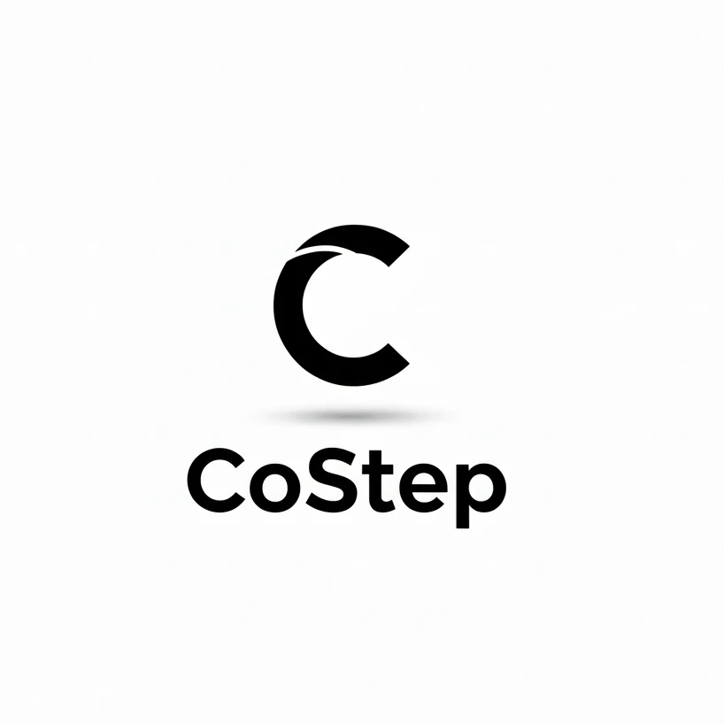

CoStep 디자인 시스템 시안
폰트 Noto Sans KR · 컬러 4색(청록·네이비·골드·블랙) · 그라데이션과 글래스모피즘 중심
컬러 4색
청록 Teal
#00E0C6 강조·상승·주요 버튼
글자용 진한 톤 #00A898
네이비 Navy
#0A1F44 바탕·화면 틀
가장 넓은 면적
골드 Gold
#FFC300 핵심 수치·추천·프리미엄
한 화면에 한두 곳만
블랙 Black
#0A0B0F 로고·문서 글자
출력물(PDF) 본문색
글자 위계 — Noto Sans KR, 굵기와 크기만으로
Display 40 / 900경영진단 리포트
H1 28 / 900재무 건전성 진단 결과
H2 20 / 700Ⅱ. 수지균형 및 지출 분석
H3 16 / 700금융기관별 차입금 현황
Body 14 / 400월 고정비 중 인건비가 48.6%로 가장 커 절감 협상의 우선 대상입니다.
Label 12 / 500총 금융차입금 잔액 합계
Number 32 / 900 고정폭17,000만원▲ 13.1%
테마 3안 — 같은 내용, 다른 질감
대안 1
② 오로라 메시 + 벤토
보고서 만들기
대안 2 데이터 화면 추천
③ 그라데이션 테두리 다크
보고서 만들기
뒤 배경이 비치는 반투명 유리. 첫인상·로그인·팝업에 강함. 입력칸·표가 많으면 글자 대비가 떨어지고 화면이 무거워짐.
흐릿한 빛 번짐 바탕 위에 단단한 카드를 격자로. 요약 대시보드·고객 요약 1장에 좋음. 글자는 단단한 카드 위라 잘 읽힘.
검정 면에 얇은 청록→골드 테두리와 은은한 빛. 표·숫자가 많은 분석 화면에서 가장 또렷함. 고급스럽지만 과하면 게임처럼 보임.
출력물(고객용 PDF)은 별도 — 흰 종이 + 블랙 글자 + 청록 포인트
경영개선 진단서
월평균 매출 1,850만원 · 고정비 720만원
담당 경영컨설턴트
유리·그라데이션은 화면에만 씁니다. PDF·인쇄물은 흰 바탕에 블랙 글자를 유지하고, 그래프·강조선에만 진한 청록(#00A898)과 진한 골드(#E0A100)를 씁니다. 쨍한 청록·골드는 흰 종이에서 글자로 쓰면 잘 안 읽히기 때문입니다.